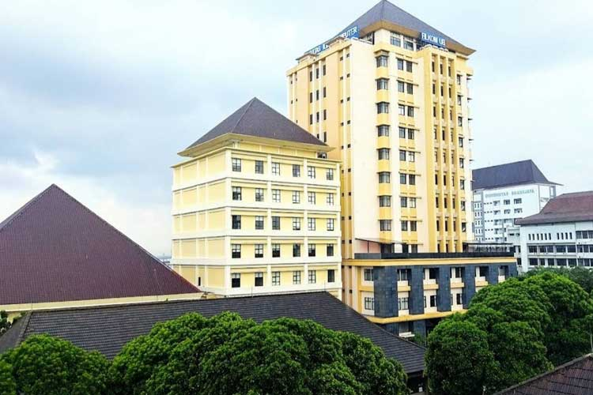

Tentang FILKOM

Fakultas Ilmu Komputer (FILKOM) Universitas Brawijaya merupakan fakultas yang berfokus pada pendidikan, penelitian, dan pengabdian masyarakat di bidang teknologi informasi, sistem informasi, kecerdasan buatan, dan rekayasa perangkat lunak.
Portal Informasi FILKOM dibuat untuk menyediakan akses cepat terhadap berita kampus, pengumuman akademik, serta kalender kegiatan yang dapat diakses oleh seluruh civitas akademika dan masyarakat umum.
Visi
Menjadi fakultas unggul dalam pengembangan ilmu komputer dan teknologi informasi yang berdaya saing internasional.
Misi
- Menyelenggarakan pendidikan berkualitas.
- Mendorong penelitian inovatif.
- Menghasilkan lulusan kompeten dan profesional.
- Memberikan kontribusi kepada masyarakat.
Kontak
Alamat: Fakultas Ilmu Komputer Universitas Brawijaya, Malang
Email: filkom@b.ac.id
Website: filkom.ub.ac.id
Telepon: (0341) 577911